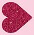

Marcas
________________________________
RECOMENDACIONES
Las tendencias en la industria de la moda pueden cambiar rápidamente y las marcas más reconocidas pueden variar según las preferencias y la influencia de diseñadores, celebridades y eventos. Algunas de las marcas más reconocidas en el mundo de la moda incluían:
Gucci: con su enfoque en el lujo y la moda extravagante, Gucci ha mantenido una posición destacada.
Louis Vuitton: conocida por sus productos de marroquinería de alta gama y accesorios, es una de las marcas de lujo más reconocidas.
Chanel: la casa de moda francesa es famosa por su elegancia atemporal y su icónico perfume Chanel No. 5.
Zara: la marca de moda rápida se destaca por su capacidad para seguir de cerca las últimas tendencias y ofrecer moda asequible.
Nike: líder en ropa y calzado deportivo, Nike es una marca globalmente reconocida.
Adidas: competidor clave en la industria del deporte y la moda casual, conocido por su estilo moderno.
H&M: otra marca de moda rápida que ofrece ropa asequible y sigue las tendencias de moda.
Prada: reconocida por su enfoque vanguardista y diseño innovador en la moda de lujo.
Versace: con sus diseños audaces y glamurosos, Versace ha sido un referente en la alta moda.
Ralph Lauren: famosa por su estilo clásico y elegante, la marca abarca una amplia gama de productos.
Recuerda que la popularidad de las marcas puede cambiar, y nuevas marcas innovadoras pueden surgir en la escena de la moda. Para obtener información actualizada sobre las marcas más destacadas en la moda, te recomendaría seguir las últimas noticias y tendencias en la industria.
Determinar la marca de ropa más barata y más elegida a nivel mundial puede ser subjetivo y dependerá de la región, la categoría de ropa y las preferencias individuales. Sin embargo, algunas marcas conocidas por ofrecer ropa asequible y que son populares globalmente incluyen:
Uniqlo: con sede en Japón, Uniqlo es conocida por su ropa básica y de calidad a precios asequibles.
H&M: esta cadena de moda rápida sueca es conocida por seguir de cerca las tendencias y ofrecer ropa asequible y moderna.
Zara: otra marca de moda rápida, Zara, originaria de España, se destaca por su respuesta rápida a las tendencias y precios accesibles.
Primark: con tiendas principalmente en Europa, Primark es reconocida por ofrecer ropa y accesorios a precios muy bajos.
Forever 21: esta marca estadounidense es conocida por su moda rápida y precios asequibles.
La elección de una marca de ropa también depende de factores personales como el estilo, la ética de la moda y la relación calidad-precio.
Michael Kors
Coach
Kate Spade
Burberry
Gucci
Prada
Louis Vuitton
Chanel
Versace
Fendi
Christian Dior
Bottega Veneta
Yves Saint Laurent
Ralph Lauren
Ferragamo
Balenciaga
Givenchy
Hermès
Chopard
Graff
Ten en cuenta que esta clasificación es una estimación general y puede variar según las colecciones específicas, productos y estrategias de precios de cada marca. Además, las tendencias y la percepción del lujo pueden cambiar con el tiempo, afectando los precios y la posición relativa de las marcas en el mercado.